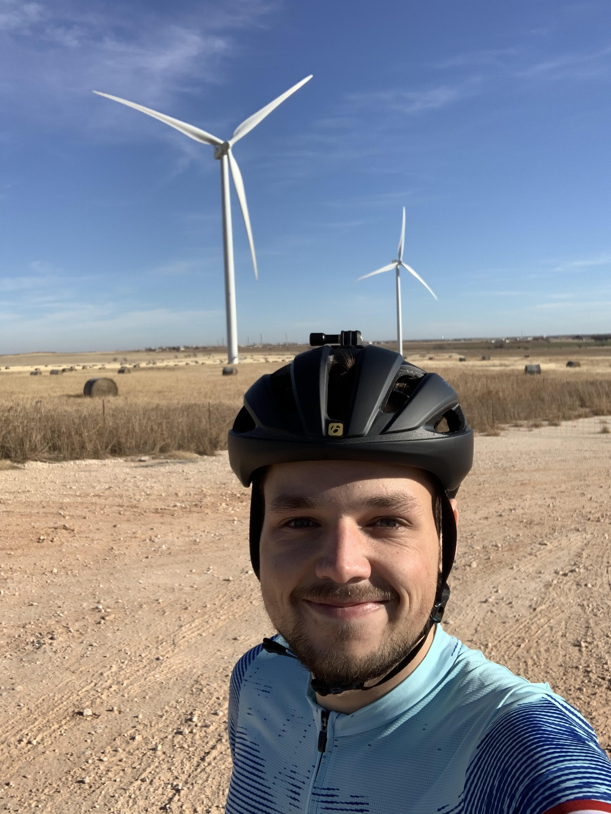
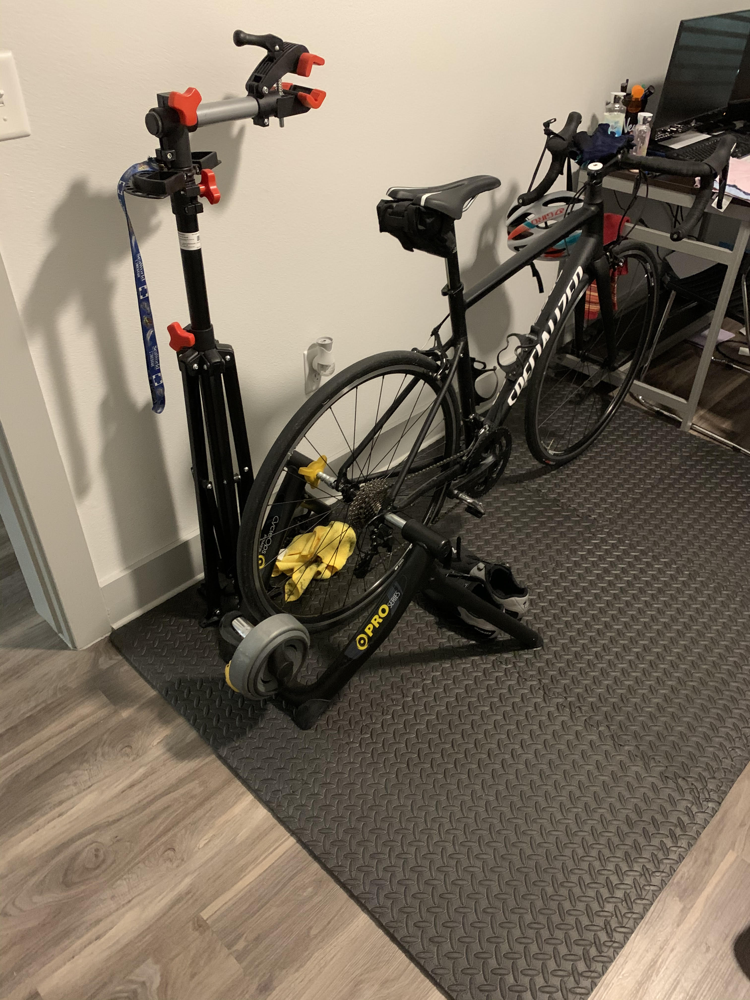
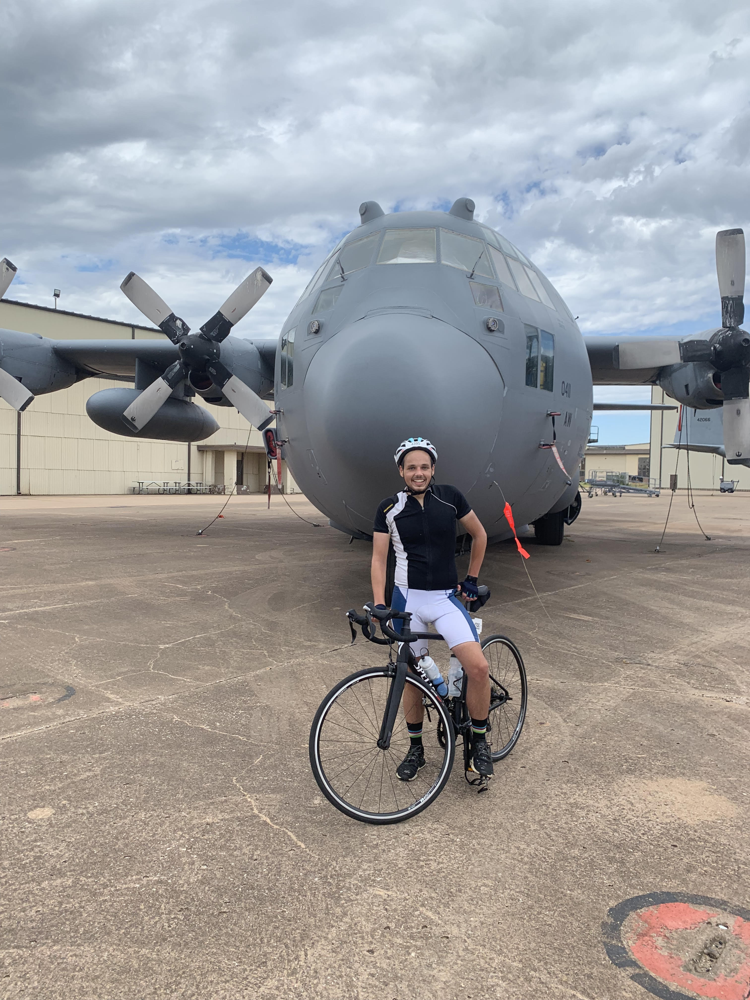

Got a bike computer! 01/24/2020

Today I went out and rode with my bike computer for the first time! It was a blast, being able to see live data like my heart rate, speed, distance and so much more is very interesting. This will make my training better as I will be able to ride in heart rate zones more accurately.
Merry Christmas and Happy Holidays! 12/25/2019
With the fall semester ending and the holiday season starting, I decided to go visit my Uncle and Aunt in Oklahoma for Christmas. One of the reasons I decided to go to OKC was to get new scenery while biking and to train. In Baton Rouge it is very flat, one way to train and get stronger is to go and ride some hills and OKC has a lot of those! Today I went out to go and ride because of the amazing weather, it was about 80(f) and little wind coming across from me so the most ideal weather. This is a picture of me in front of some giant wind turbines which are very cool and loud. Just thinking about being on top of the wind turbine made me get sick to the stomach. Overall one of my favorite rides so far!
I can now ride indoors in my room! 10/22/2019
This weekend my uncle gave me one of his old bike trainers. With this bike trainer I can hook up my back wheel to a roller that allows me to pedal and as I pedal is acts like I am out on the road. This will be very useful with school picking up and it getting dark outside earlier in the evenings. Also, I wanted to be courteous to my downstairs neighbors so I bought some work out maps to dampen the sounds and vibrations.
My first bike event! 08/24/2019
Today I went out and rode Hotter Then Hell Hundred. This is the bike ride that I was reffering to in my post from 05/26/2019. It was a fun time, when talking to other bikers a lot of them stated that the weather was much better then past years. It was about 85 little no humidity and almost no wind for most of it. This ride was amazing, after starting in the city of Wichita Falls, Texas we then rode through the country for about 45 miles before we wrapped back around and went through some little towns, after about another 7 miles we rode through the Air Force base where my uncle took this picture of me, then finally finishing the ride with a total of 67 miles. Over all it was a very fun day and experience, I look forward to riding it again!
Complete my first 50 mile bike ride! 05/26/2019

Today I planned to ride for 3 hours total. I decided a good way to time this was to ride out for 1 hour and 30 minutes one way and then turn around and ride back for 1 hour and 30 Minutes. However, after getting back I noticed I was only 3 miles away from 50 miles. At this point, I was extremely exhausted, tired and a little dehydrated. The temperature was about 100(F), but I wanted to keep riding. I was thinking if I stopped right now I would never be able to look at this ride in my history because I would just see how close I was to 50 and that I quit. So I set back out and rode for another 3 miles and finished with 50 total miles! I also decided to sign up for a bike ride event in August!
My first road bike! 04/14/2019

I bought this bike as a birthday present to my self and while buying my bike today I thought it would be a fun and good idea to start a blog about my experience biking. I'm not sure how biking will go, but I enjoyed biking while I was a kid so I have good thoughts about this!